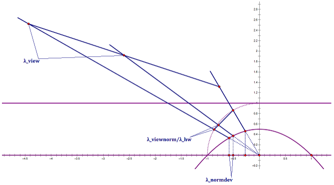
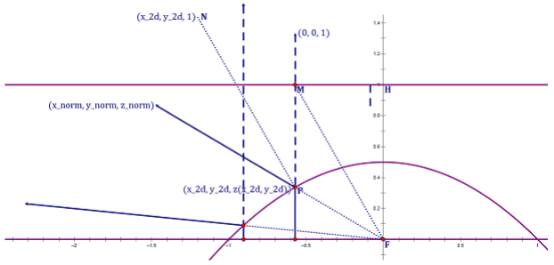
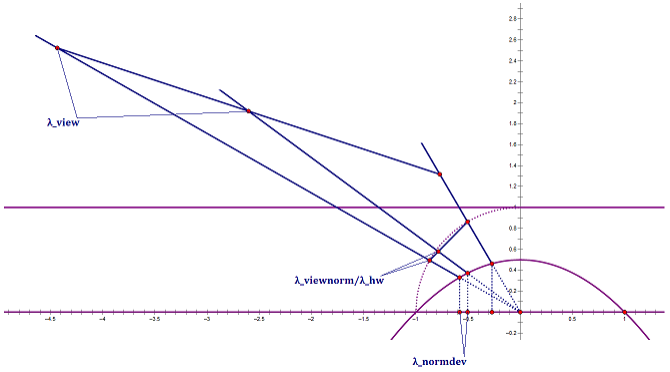

Since the sphere is a 2-manifold rather than a 3-manifold, a bijection can be formed between the points on the sphere and the coordinates of the 2D texture.
Real-Time Rendering Fourth Edition / 10.4.2 Sphere Mapping


Real-Time Rendering Fourth Edition / 16.6 Compression and Precision
Evidently, a bijection can be formed between the unit vectors and the points on the sphere. And thus, the projector functions can be used to compress the normals to 2D coordinates.
Imagination Technologies Limited. "Dual Paraboloid Environment Mapping." Power SDK Whitepaper 2017.